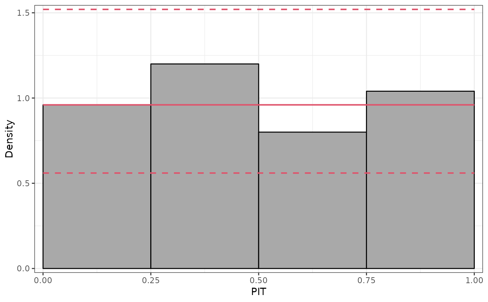
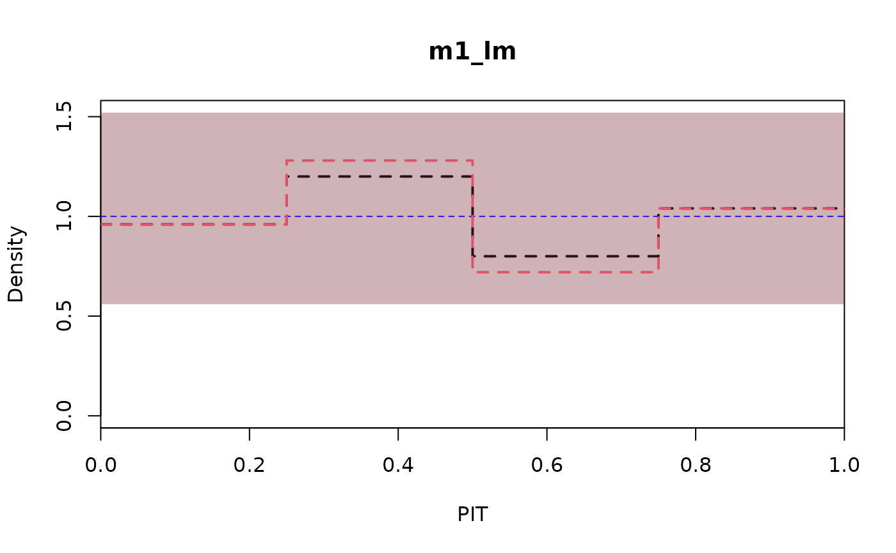
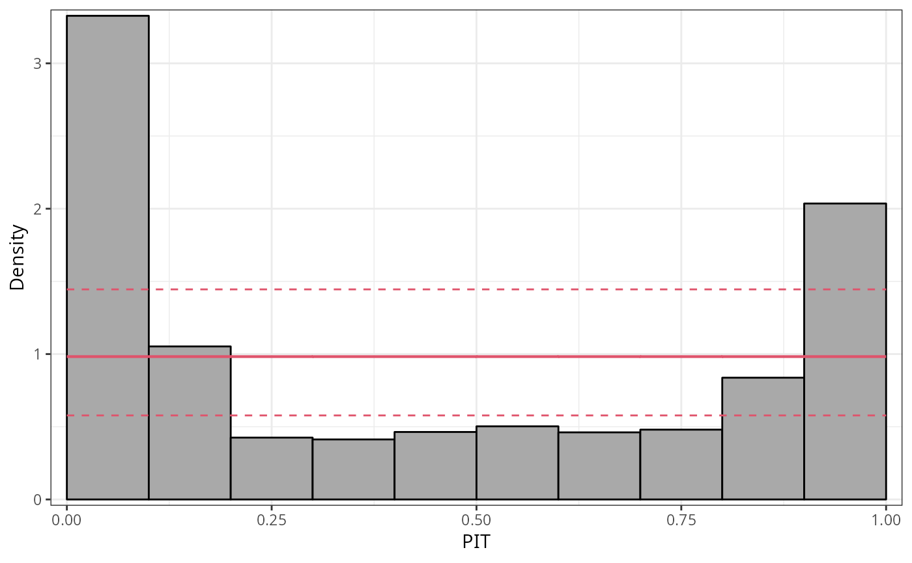

Plotting a PIT Histogram
plot.pithist.RdPIT histograms graphically compare empirical probabilities from fitted models with a uniform distribution.
# S3 method for pithist plot( x, single_graph = FALSE, style = c("histogram", "lines"), confint = TRUE, ref = TRUE, xlim = c(0, 1), ylim = c(0, NA), xlab = NULL, ylab = NULL, main = NULL, col = "black", fill = adjustcolor("black", alpha.f = 0.2), border = "black", alpha_min = 0.2, lwd = NULL, lty = 1, axes = TRUE, box = TRUE, ... ) # S3 method for pithist lines( x, confint = FALSE, ref = FALSE, col = "black", fill = adjustcolor("black", alpha.f = 0.2), alpha_min = 0.2, lwd = 2, lty = 1, ... ) # S3 method for pithist autoplot( object, single_graph = FALSE, style = c("histogram", "lines"), confint = TRUE, ref = TRUE, xlim = c(0, 1), ylim = c(0, NA), xlab = NULL, ylab = NULL, main = NULL, colour = "black", fill = "darkgray", border = "black", alpha_min = 0.2, size = NULL, linetype = 1, legend = FALSE, ... )
Arguments
| single_graph | logical. Should all computed extended reliability diagrams be plotted in a single graph? |
|---|---|
| style | character specifying the syle of rootogram (see below). FIXME: Description |
| confint | logical. Should confident intervals be drawn? |
| ref, col, fill, border, alpha_min, lwd, lty, axes, box | additional graphical
parameters for base plots, whereby |
| xlim, ylim | graphical parameters. These may pertain either to the whole plot or just the histogram or just the fitted line. |
| xlab, ylab, main | graphical parameters. |
| ... | further graphical parameters. |
| object, x | an object of class |
| colour, size, linetype, legend | graphical parameters passed for
|
Details
PIT histograms graphically the probability integral transform (PIT), i.e.,
observed probabilities from fitted probability models, with a uniform
distribution. It leverages the procast generic and then
essentially draws a hist.
In case of discrete distributions the PIT is either drawn randomly from the corresponding interval or distributed proportionally in the histogram (FIXME: not yet implemented).
References
Czado C, Gneiting T, Held L (2009). “Predictive Model Assessment for Count Data.” Biometrics, 65(4), 1254--1261.
Agresti A, Coull A B (1998). “Approximate is Better than ``Exact'' for Interval Estimation of Binomial Proportions.” The American Statistician, 52(2), 119--126.
See also
Examples
require("crch") m1 <- lm(dist ~ speed, data = cars) m2 <- crch(dist ~ speed | speed, data = cars) m3 <- crch(dist ~ speed | speed, left = 30, data = cars) pit1 <- pithist(m1)pit2 <- pithist(m2, plot = FALSE) pit3 <- pithist(m3, plot = FALSE) plot(pit1, confint = "red", ref = "blue", fill = "lightblue")#> #>